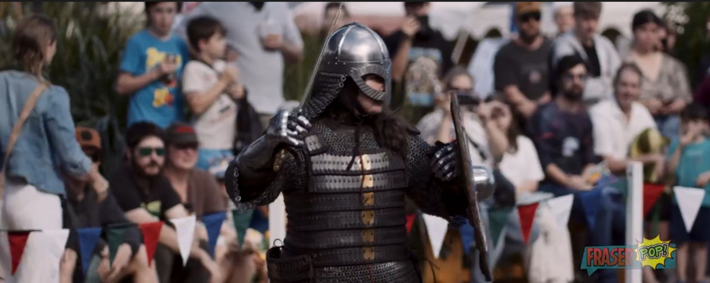

Jóhanna "Jóka" Olafsdottir
Norse Warrior • Huscarl in Northumbria

Basic Information
Name: Jóhanna "Jóka" Olafsdottir
Parentage: An illegitimate, but acknowledged, daughter of King Olaf II Haraldsson of Norway (St. Olaf). Her mother was a woman of the court.
Origin: Born 1021 in Nidaros (modern Trondheim). She was raised within the royal household.
Current Year (Persona): 1057
Current Age: 36
Rank & Title: None. A landless warrior, a huscarl (household soldier) in the service of a minor thegn in Northumbria.
Current Status: At 36, Jóka is a veteran survivor who earns her position through her martial skills.
The Great Exile (1028 - 1035)
1028 (Age 7): Fled Norway with the royal household as a dependant, travelling to Sweden and then to the court of Yaroslav the Wise in Kievan Rus'.
1030 (Age 9): Her father was killed at the Battle of Stiklestad.
Life in Kyiv (1030-1035): Spent her formative years among the household retainers and warriors of the Varangian Guard, receiving a practical education in survival, riding, and the use of arms.
Return to Norway & Life in the Household (1035 - c. 1042)
1035 (Age 14): Returned to Norway as a member of her half-brother Magnus the Good's household retinue. As an illegitimate daughter, she held no lands or formal title.
Move to England (c. 1042)
Travelled to England in the company of merchants or mercenaries and made her way to the Danelaw in northern England, where her Norse language and fighting skills were valuable.
Current Status (1057)
Rank & Title: None. A landless warrior, a huscarl (household soldier) in the service of a minor thegn in Northumbria.
Situation: At 36, Jóka is a veteran survivor who earns her position through her martial skills.
Narrative Summary
Born in Nidaros, Jóhanna was the acknowledged but illegitimate daughter of King Olaf II. Her life was upended at age seven when Cnut the Great's invasion forced the royal household into exile. In the court of Yaroslav the Wise in Kyiv, without the formal tutors of a princess, Jóka found her education among the household guards and Varangian mercenaries, learning the arts of survival and war.
She returned to Norway in 1035 as a member of her half-brother Magnus the Good's household retinue. With no lands or title to her name, she sought her own path and journeyed to England around 1042. In the northern lands of the Danelaw, her Norse tongue and martial skills found a welcome. Now, at 36, Jóka is a landless warrior, a huscarl in the service of a Northumbrian thegn, her position earned by her sword, not her birth.